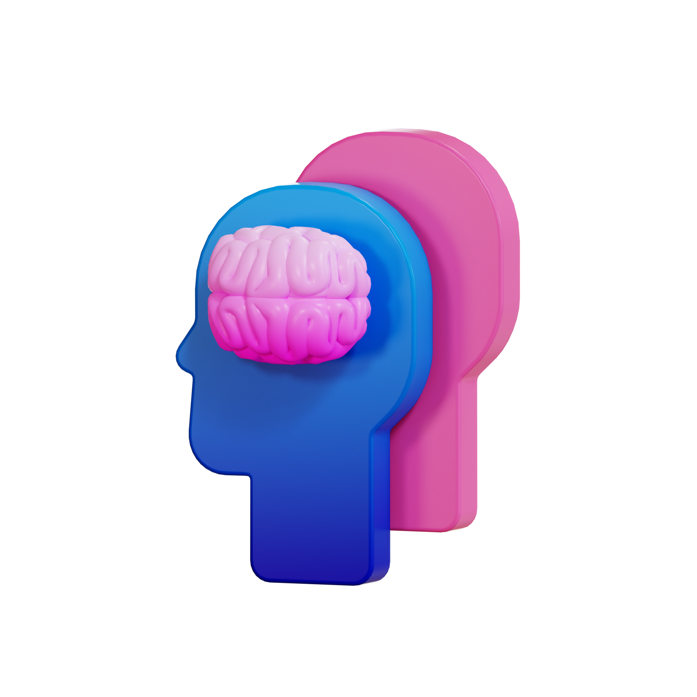

WELLBEING
C'est plus facile à dire qu'à faire. Nous sommes là pour vous aider à travers la thérapie
Bienvenue chez Wellbeing Coaching - Votre destination pour un bien-être mental épanouissant ! Nous sommes dévoués à accompagner chacun vers une vie équilibrée, épanouissante et enrichissante sur le plan émotionnel.
